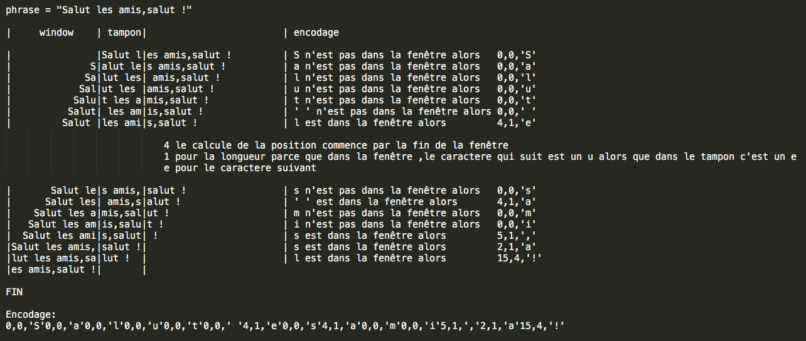

LZ77 est un algorithme de compression sans perte proposés par Abraham Lempel et Jacob Ziv en 1977.
Cette algorithme repose de manière essentielle sur une mesure de complexité pour les suites de longueur finie, la complexité de Lempel-Ziv.
LZ77 utilise une fenetre glissante et un tampon, les motifs rencontrees dans le tampon suscite une recherche d'occurence dans la fenetre.
Si une occurence est trouvee, alors le motif dans le tampon est remplacee par la position dans la fenetre, la longueur de l'occurence et le prochain caractere.
Si aucune occurence est trouvee, alors le motif present est remplacee par 0, 0 et le caractere present.
exemple:
[position][longueur][caractere suivant] ou [position][longueur][caractere present]

Usage:
python3 compress.py input output
python3 decompress.py input output
Le fichier Setting.py contient les parametre pour le nombre de bits de chaque espaces soit position, longueur, caractere et l'adress de depart.
Pour information:
open information.html
ou
python3 Interface/graphic.py
L'interface graphique
Code source:
https://github.com/fbonhomm/Simple-LZ77
Variante de LZ77:
Quand aucun caractere n'est trouver au lieu de coder 0,0,c on fait 0,c.
Option a implementer:
L'encodage ne conteint aucun en-tete, a rajouter comme option
La possibilité de changer la position d'encodage : [position][longueur][caractere] ou [longueur][position][caractere] ...
Pour des informations ou des idees d'implementation:
mail: flo-github@outlook.fr